<!-- ============================================================ --> <!-- 0. TITLE / SETUP / RUNNING EXAMPLE --> <!-- ============================================================ --> <section class="title-slide-lol"> ## AI Ethics & Safety — A Security Lens ### Adversarial ML in safety-critical systems (autonomous driving focus) <span class="smaller grey italic">Seminar deck (75+ min)</span> <br> <span class="smaller grey italic">Running example: stop sign → perception → planning → control</span> Note: Open with “safety as engineering constraints under uncertainty + adversaries”. Commit to one running example (stop sign) and reuse it in every major section. </section> --- ### How to navigate <div class="callout activity"> <span class="tag">Tip</span><span class="time">10s</span> <ul class="mini"> <li><span class="kbd">Space</span> next, <span class="kbd">Shift</span>+<span class="kbd">Space</span> back</li> <li><span class="kbd">Esc</span> overview, <span class="kbd">S</span> speaker notes</li> <li>URL hash updates for deep-linking to slides</li> </ul> </div> --- ### Agenda (concept map) 1. Technical framing: safety vs ethics (engineering view) 2. Threat models for ML 3. Attack surface in autonomous driving 4. Data poisoning (training-time) 5. Model-level attacks (privacy + extraction + backdoors) 6. Adversarial examples & physical attacks (inference-time) 7. Case study: multi-stage attack chain 8. Trade-offs (privacy ↔ robustness ↔ utility) 9. Defenses (data/model/system) 10. Evaluation challenges 11. Ethical implications (grounded) 12. Governance dimensions 13. Open problems 14. Conclusion 15. Discussion / Q&A Note: Promise: we’ll stay technical; ethics/governance are tied to concrete failure modes. --- ### Warm-up (90s) <div class="callout poll"> <span class="tag">Poll</span><span class="time">30s</span> <p class="mini">Which failure mode scares you most in deployed ML?</p> <ul class="mini"> <li>A) random errors (noise)</li> <li>B) distribution shift (the world changes)</li> <li>C) adversary (someone tries to break it)</li> <li>D) humans/process (data + deployment mistakes)</li> </ul> </div> <div class="callout activity" style="margin-top:0.7em"> <span class="tag">Think</span><span class="time">60s</span> <p class="mini">If you were an attacker, would you target <b>data</b>, <b>model</b>, or <b>system integration</b>?</p> </div> --- <!-- ============================================================ --> <!-- 1. AI ETHICS & SAFETY: TECHNICAL FRAMING --> <!-- ============================================================ --> ## 1) AI Ethics & Safety: A Technical Framing --- ### What “AI safety” means in practice (engineering view) - **Robustness**: performance under shift + perturbations + worst-case inputs - **Reliability**: stable behavior under expected operating conditions - **Alignment**: objective matches intended outcomes (specification ↔ optimization) - **Security**: attacker-aware design (threat model + controls) <div class="callout takeaway" style="margin-top:0.7em"> <span class="tag">Key idea</span> <p class="mini">Safety is not a vibe; it is <b>constraints</b> + <b>guarantees</b> under uncertainty and adversaries.</p> </div> Note: Make the point that “safety” is measurable only after you specify the environment + threat model. --- ### Ethics as constraints on system design (not philosophy) - **Ethics**: constraints on what the system is allowed to do / optimize - **Safety**: constraints on how the system behaves when reality disagrees with training - **Security**: constraints on behavior when someone actively tries to break it <div class="callout takeaway" style="margin-top:0.7em"> <span class="tag">Design framing</span> <p class="mini">In safety-critical ML, ethics becomes a <b>requirements engineering</b> problem.</p> </div> Note: Call out “constraints must be implementable”: logging, audits, rate limits, monitors, fail-safe states. --- ### Principles → technical interpretations <div class="cols2"> <div> <ul class="mini"> <li><b>Fairness</b> → distributional performance guarantees<br><span class="pill muted">groups / environments / corner cases</span></li> <li><b>Accountability</b> → traceability of decisions<br><span class="pill muted">logs, provenance, change control</span></li> </ul> </div> <div> <ul class="mini"> <li><b>Transparency</b> → interpretability vs attack-surface trade-off<br><span class="pill muted">explanations can leak gradients / features</span></li> <li><b>Privacy</b> → information leakage bounds<br><span class="pill muted">membership/inversion/extraction</span></li> </ul> </div> </div> --- ### Why safety failures ≠ normal software bugs <p></p> <div class="caption">Statistical uncertainty + adversarial environments make failures hard to “unit test away”.</div> Note: Stress: non-determinism, tail risk, and distribution shift. In cyber-physical systems, small perception errors can cascade into unsafe control. --- <!-- ============================================================ --> <!-- 2. THREAT MODELS IN MACHINE LEARNING --> <!-- ============================================================ --> ## 2) Threat Models in Machine Learning --- ### Formalizing the adversary - **Knowledge**: black-box / gray-box / white-box - **Capabilities**: query access, training-data access, physical access - **Constraints**: budget, stealth, time, detection risk --- ### Security goals (CIA) mapped to ML - **Integrity**: force wrong predictions / wrong actions - **Availability**: degrade system so it fails often / disables itself - **Confidentiality**: extract sensitive info (training data, weights, IP) --- ### Threats by lifecycle stage <p></p> <div class="caption">Same attacker goals; different leverage points depending on access.</div> --- ### Threat model checklist (practical) <div class="callout activity"> <span class="tag">Use this</span> <ul class="mini"> <li>What does the attacker observe? (inputs, outputs, internals)</li> <li>What can they change? (data, code, sensors, network)</li> <li>What is success? (targeted misclass, system shutdown, leakage)</li> <li>What’s the budget? (queries, poisoned points, physical time)</li> <li>How do we detect/contain? (monitoring + incident response)</li> </ul> </div> Note: Make this “the template” used in every attack section. --- <!-- ============================================================ --> <!-- 3. ATTACK SURFACE IN AUTONOMOUS DRIVING SYSTEMS --> <!-- ============================================================ --> ## 3) Attack Surface in Autonomous Driving Systems --- ### End-to-end pipeline (where attacks land) <p></p> <div class="caption">Pipeline: data → labeling → training → deployment → runtime inference → planning/control.</div> --- ### Components (simplified) - **Perception**: vision models (detection, segmentation) - **Sensor fusion**: camera + LiDAR + radar + map priors - **Planning & control**: trajectory, constraints, actuation Note: Reinforce: the model is only one component; safety is a system property. --- ### Why ADS is uniquely hard - **Real-time decisions** (latency budgets) - **Low tolerance for error** (rare events dominate risk) - **Open world** (shift is the default) - **Strong incentive for adversaries** (insurance, sabotage, prank) --- <!-- ============================================================ --> <!-- 4. DATA POISONING ATTACKS --> <!-- ============================================================ --> ## 4) Data Poisoning Attacks --- ### 4.1 Formalization: bilevel optimization <p></p> \[ \min_{\Delta \in \mathcal{C}} \; \mathcal{L}_{\text{val}}(\theta^\*(\Delta)) \quad \text{s.t.} \quad \theta^\*(\Delta)=\arg\min_{\theta}\; \mathcal{L}_{\text{train}}(\theta; D \cup \Delta) \] Note: Explain outer objective (attacker), inner objective (learner). Emphasize constraints: limited poisoning budget, stealth constraints. --- ### 4.2 Attack types (training-time) <p></p> --- ### 4.3 ADS examples (concrete) - **Poison traffic sign dataset**: shift STOP → SPEED LIMIT boundary - **Rare-event manipulation**: pedestrians at night / unusual weather - **Supply chain poisoning**: pretrained model or dataset artifact --- ### 4.4 Key insight: stealthiness ↔ effectiveness <p></p> <div class="callout takeaway" style="margin-top:0.6em"> <span class="tag">Design tension</span> <p class="mini">The best attacks look like “natural data”. Defenses must be robust to benign outliers <i>and</i> adaptive attackers.</p> </div> --- ### Demo hook (optional) <div class="callout quiz"> <span class="tag">Demo</span><span class="time">2–5 min</span> <p class="mini">Toy poisoning: how a handful of points can shift a decision boundary.</p> <p class="mini muted">Notebook: <a href="./demo_new2/demo_poisoning_toy.ipynb" target="_blank">demo_new2/demo_poisoning_toy.ipynb</a></p> </div> Note: Run live if time; otherwise use screenshots from the notebook. --- <!-- ============================================================ --> <!-- 5. MODEL-LEVEL ATTACKS (CORE) --> <!-- ============================================================ --> ## 5) Model-Level Attacks (Core) --- ### 5.1 Model inversion: goal and intuition - **Goal**: recover (approximate) training inputs from model access - **Why it works**: overfitting + rich outputs (confidence/gradients) - **Impact**: leakage of sensitive images / locations / identities --- ### Inversion as optimization \[ x^\* = \arg\min_x \; \ell\!\left(f_\theta(x), y\right) + \lambda R(x) \] - Query outputs, (sometimes) gradients, and optimize input \(x\) - Stronger with: richer APIs, weak regularization, memorization --- <p></p> --- ### 5.2 Membership inference: hypothesis test view - **Question**: “Was this point in the training set?” - **Mechanism**: training points often have lower loss / higher confidence - **Threat**: privacy leakage even without reconstructing the data --- <p></p> --- ### Demo hook (optional) <div class="callout quiz"> <span class="tag">Demo</span><span class="time">2–5 min</span> <p class="mini">Membership inference on an overfit toy model (loss threshold attack).</p> <p class="mini muted">Notebook: <a href="./demo_new2/demo_membership_inference_toy.ipynb" target="_blank">demo_new2/demo_membership_inference_toy.ipynb</a></p> </div> --- ### 5.3 Model extraction (stealing): the API is the training set - **Goal**: train a surrogate that matches a target model - **Method**: query inputs → collect outputs → distill / fit surrogate - **Consequences** - IP theft - enables stronger downstream attacks (white-box-ish transfer) --- <p></p> --- ### Demo hook (optional) <div class="callout quiz"> <span class="tag">Demo</span><span class="time">2–5 min</span> <p class="mini">Model extraction: fidelity vs number of queries.</p> <p class="mini muted">Notebook: <a href="./demo_new2/demo_model_extraction_toy.ipynb" target="_blank">demo_new2/demo_model_extraction_toy.ipynb</a></p> </div> --- ### 5.4 Backdoored models: triggers and persistence - **Trigger-based manipulation**: normal accuracy looks fine - **Clean-label vs dirty-label** poisoning - **Persistence under transfer learning**: backdoor can survive fine-tuning --- <img class="diagram" src="img_new2/backdoor_trigger.svg" alt="Backdoor trigger: clean vs triggered path and persistence under transfer learning" /> Note: Emphasize “supply chain”: you may not control pretrained weights. --- <!-- ============================================================ --> <!-- 6. ADVERSARIAL EXAMPLES & PHYSICAL ATTACKS --> <!-- ============================================================ --> ## 6) Adversarial Examples & Physical Attacks --- ### Optimization perspective \[ x_{\text{adv}} = x + \delta,\quad \|\delta\|_p \le \epsilon,\quad \arg\max_\delta \; \ell(f_\theta(x+\delta), y) \] - Small perturbation → large prediction shift - **Transferability**: attacks often transfer across models --- ### Physical-world attacks (stop sign archetype) <p>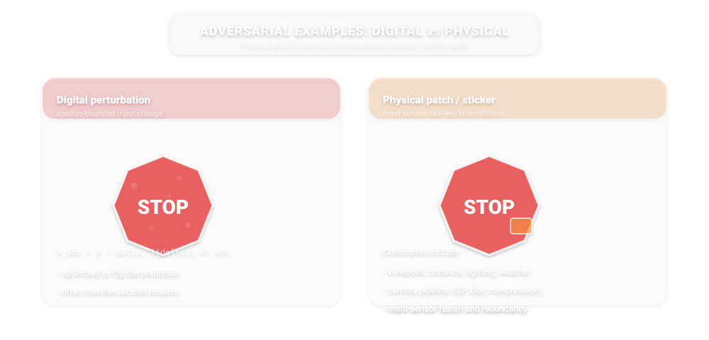</p> <div class="caption">Physical attacks must survive viewpoint, lighting, distance, camera pipeline, and defenses.</div> --- ### Why physical robustness is hard - Uncontrolled transforms: scale, pose, weather, motion blur - Sensor pipeline: ISP, compression, exposure, rolling shutter - Multi-sensor fusion: success may require breaking redundancy Note: Introduce Expectation over Transformation (EoT) as the attacker’s trick. --- <!-- ============================================================ --> <!-- 7. CASE STUDY: MULTI-STAGE ATTACK --> <!-- ============================================================ --> ## 7) Case Study: Multi-Stage Attack on a Self-Driving System --- ### Combined scenario - Poisoned training data embeds a backdoor trigger - Deployed model passes clean validation - Physical trigger appears at runtime (sticker/patch) - Failure propagates: perception → planning → control --- <p></p> --- ### Why standard validation fails - Clean test sets don’t capture adversarial distributions - Offline metrics miss system-level cascade failures - Rare events are under-sampled by design --- <!-- ============================================================ --> <!-- 8. PRIVACY vs ROBUSTNESS vs UTILITY --> <!-- ============================================================ --> ## 8) Privacy vs Robustness vs Utility Trade-offs --- <p></p> --- ### Differential privacy (DP): what it buys, what it costs - **Protects against**: membership inference, some inversion - **Costs**: reduced accuracy (especially on tails) - **Engineering reality**: tuning \((\varepsilon,\delta)\) is a product decision Note: Be honest: DP is not a magic privacy switch; it’s a budget + threat model. --- <!-- ============================================================ --> <!-- 9. DEFENSE MECHANISMS --> <!-- ============================================================ --> ## 9) Defense Mechanisms --- ### Layered defense (the only credible story) <p></p> --- ### 9.1 Data-level defenses - data filtering + anomaly detection - robust statistics / influence functions - provenance + dataset versioning + audits --- ### 9.2 Model-level defenses - regularization + early stopping - calibration (don’t trust raw confidence) - differential privacy (privacy budget) --- ### 9.3 Adversarial defenses - adversarial training (empirical robustness) - certified robustness (formal but limited scalability) - input transformations + randomized smoothing (trade-offs) --- ### 9.4 System-level defenses (ADS-relevant) - sensor redundancy (fusion) - runtime monitors (OOD, consistency checks) - safe fallback modes + operational design domain (ODD) gating --- <!-- ============================================================ --> <!-- 10. EVALUATION CHALLENGES --> <!-- ============================================================ --> ## 10) Evaluation Challenges --- <p></p> --- ### Practical guidance: what to measure - Worst-case within a threat model (not only average) - Tail risk metrics + scenario coverage - Robustness regression tests (attacks as tests) - Incident response: detection + containment + patching --- <!-- ============================================================ --> <!-- 11. ETHICAL IMPLICATIONS IN ADVERSARIAL SETTINGS --> <!-- ============================================================ --> ## 11) Ethical Implications (Grounded) --- ### Responsibility in adversarial failures - Who is accountable: developer vs integrator vs operator? - “Known unknowns” must be documented (threat model disclosure) - Duty to monitor + update in the field --- ### Transparency dilemma - More openness → easier attacks (sometimes) - Less openness → harder audits + weaker trust - Engineering compromise: controlled transparency (tiered access) --- ### Privacy vs safety trade-offs - Monitoring improves safety but can become surveillance - Data minimization conflicts with rare-event learning - DP + federated + on-device learning: partial mitigations --- ### Dual-use research - Publishing attacks improves defenses… and helps attackers - Safer disclosure patterns: redacted details + timelines + mitigations --- <!-- ============================================================ --> <!-- 12. POLITICAL & GOVERNANCE DIMENSIONS --> <!-- ============================================================ --> ## 12) Political and Governance Dimensions --- ### Regulation of safety-critical AI - Should robustness be mandatory? - Certification vs post-market monitoring - Standards as “default law” (industry influence) --- ### Liability frameworks - Product liability: manufacturer / supplier - Operator responsibility in mixed autonomy - Evidence: logs, provenance, update history --- ### National security concerns - Model extraction as strategic risk - Data sovereignty + compute controls - Asymmetric attackers (state vs small org) --- ### Global asymmetries - Divergent regulatory approaches (EU/US/China) - Centralization of AI power (compute + data + talent) - Who sets the benchmarks defines “safe” --- <!-- ============================================================ --> <!-- 13. OPEN RESEARCH PROBLEMS --> <!-- ============================================================ --> ## 13) Open Research Problems --- - Scalable certified robustness - Detection of stealthy poisoning - Robust multimodal perception (vision + LiDAR + radar) - Aligning theoretical guarantees with deployment reality - System-level verification (ML + control + human factors) Note: Close with “safety is a stack”: theory, tooling, process, governance. --- <!-- ============================================================ --> <!-- 14. CONCLUSION --> <!-- ============================================================ --> ## 14) Conclusion --- <div class="callout takeaway"> <span class="tag">Key takeaways</span> <ul class="mini"> <li>ML systems are inherently vulnerable to adversarial manipulation.</li> <li>No single-layer defense works; use layered controls.</li> <li>Safety requires: technical + ethical + regulatory integration.</li> </ul> </div> --- <!-- ============================================================ --> <!-- 15. DISCUSSION / Q&A --> <!-- ============================================================ --> ## 15) Discussion / Q&A --- <div class="callout activity"> <span class="tag">Questions</span> <ul class="mini"> <li>Should adversarial robustness be legally required?</li> <li>Is limiting model access justified for safety/privacy?</li> <li>Can we ever guarantee safety in open environments?</li> </ul> </div> --- ### Thanks <div class="callout poll"> <span class="tag">Exit ticket</span><span class="time">30s</span> <p class="mini">One sentence: what is the <b>most actionable</b> thing you’ll do differently after this?</p> </div> --- <!-- Closing slide repeated intentionally so the deck can be navigated cyclically during Q&A. --> ## AI Ethics & Safety — A Security Lens <span class="smaller grey italic">Stop sign as the running example · Threat models · Attacks · Defenses · Governance</span> Note: Loop slide for Q&A navigation.